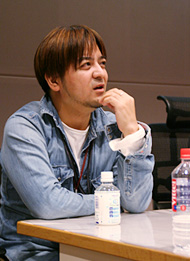
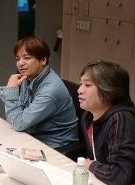
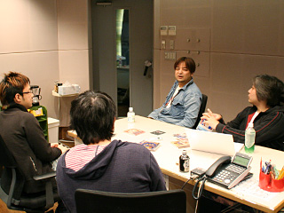

幡谷：実はさ、ソニックのキャラクターにテーマ曲を作ろうってのは、1993年の『ソニック・ザ・ヘッジホッグCD』の頃からあったんだよ。
瀬上：おー、重鎮語る。
幡谷：他のアニメで、ちょうどキャラクターのテーマ曲が出て成功し始めた頃で、エミーとかメタルソニックとか考えたことがあったんだよね。でも、紆余曲折あって、結局、当時は上手く行かなかったんだけど、その後にキャラクターのテーマ曲に関して必然性があるタイトルが出てきて、羨ましいなとは思ってたんだ。
瀬上：「歌」という意味だったら、『ソニックR』とかもそうでしたよね。
幡谷：あのとき、監修みたいなことをさせてもらったんだけど、あの頃はヨーロッパで楽曲制作を手掛けていたリチャード・ジャックスも苦労してたんだよ。で、最終的に選ばれたのがあの曲たち。
瀬上：そういえば、『ソニック・ザ・ヘッジホッグCD』～アニメ～『ソニックR』と、ずっとヴォーカル曲といえば女性シンガーでしたね。『ソニックアドベンチャー』のときは、そのビジュアルやゲーム性も含めて大きく切り替わるタイミングだったので、男性シンガーにしましたが。
幡谷：ダンスミュージックというのがベースにあると、やっぱり女性シンガーになるよね。
瀬上：テイルスのテーマ曲だけは、男の子キャラなんだけど、女性シンガーを起用してました。それは決して、なよってしたキャラクターという意味ではなく、歌詞に込めたメッセージというのが、女性が歌った方が一般的なメッセージソングとしても伝わりやすいと思ったからなんですけどね。

床井：こうして見ると、今回もボーナストラックが多いですよね。
瀬上：先ほど、女性ヴォーカルの曲ということで話したアニメ（O.V.A.）の曲、”Look-a-Like”もそうだよね。今回が初の音源化なんだけど。元々、上下巻としてビデオでリリースされていたアニメで使われていたもので、僕は個人的にアメリカ版のDVDを持っているんだけど、この曲のマスターテープがなかなか見つけられなくてね。本当は「トゥルー・ブルー」のときにも入れたかったくらいだったんだけど、結局見つからなくて。
今回は、人伝にその曲の制作者の多田三洋さんと連絡を取ることが出来て、彼が保管していた十数年前のマスターDATをお借りすることになったんだけど、確認してみたら、その曲が4分くらいある曲でビックリ！実は、本作を作るにあたって、その曲数と収録時間を割り出すときに、DVDから録り込んだものを仮に入れていたんだけど、そのときに短いバージョン分の枠しか確保していなかったんだよね。ロングバージョンの存在すら知らなかったし。で、今回はマスターテープを使って、アニメのエンディングで使われたバージョンを再現してみました。後半の繋ぎ具合とかは、当時、アニメで使われていたものより良くなってると思うけど。これで20周年記念でボックスセットとか作ったら、そのときはフルバージョンを入れよう！（笑）
幡谷：これを収録をする動きは大変そうだったけど、こういうところがいいCDになる一因だよね。
床井：幡谷さんの『ソニック・ザ・ヘッジホッグ3』のリミックスもありますが。
幡谷：『ソニック ジェムズコレクション』ってさ、いい仕事だったなー。あれは楽しかった。
床井：このリミックスって幡谷さんの真骨頂だよね。
幡谷：え、ほんと？

床井：SEとかって「何使う？」ってところから始まるし、雑多になって整理しきれない！
瀬上：使い方が上手いよね。
床井：そうそう、ブレイクな感じとか。
幡谷：「好きでやってます！」って感じになるよね。
瀬上：それを言うとね、『ソニックヒーローズ』のサウンドトラックのブックレットで、幡谷さんは「ソニック愛」って言葉を使ってるんですよ。それですか、やっぱり？
幡谷：何だそれ？（笑）
大谷：幡谷さんのそういう素材遊びはライフワーク的な感じがしますね。どのタイトルでも必ずそうやって、最後にまとめて集大成を作るみたいな。
幡谷：でも、このタイトル（『ソニック・ザ・ヘッジホッグ3』）は自分の担当じゃなかったんだけどね（笑）。
瀬上：ですよね、あまり関わってなかったし。幡谷さんって、『ソニックCD』以降は『ソニックヒーローズ』を手伝ってもらったくらいですもんね。
幡谷：だから客観的に見てるもん、ずっと。